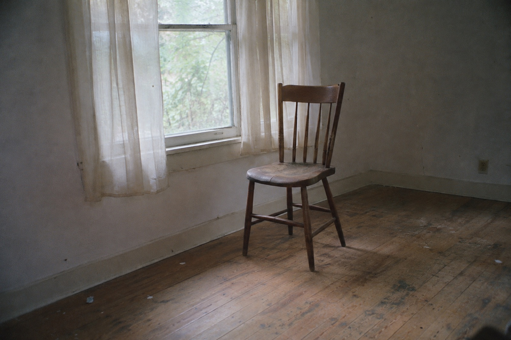
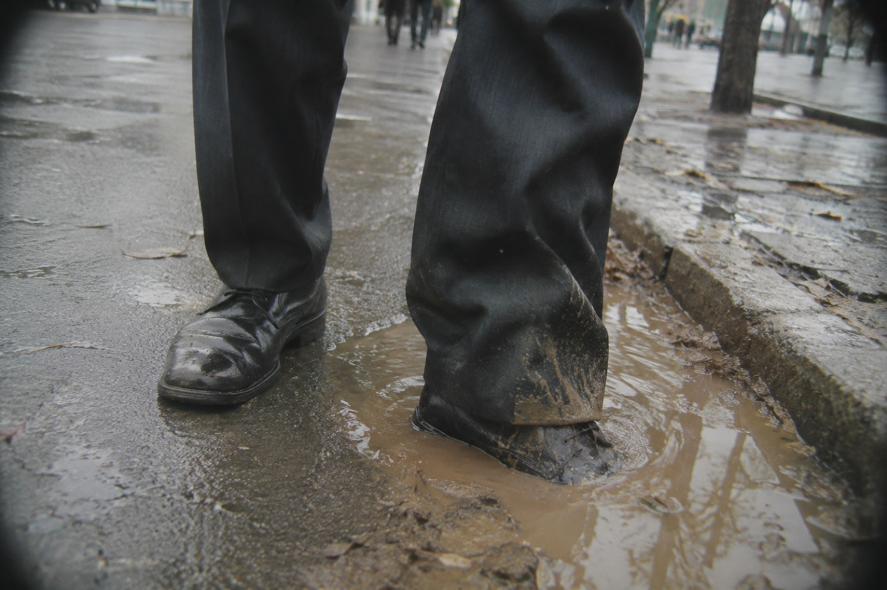
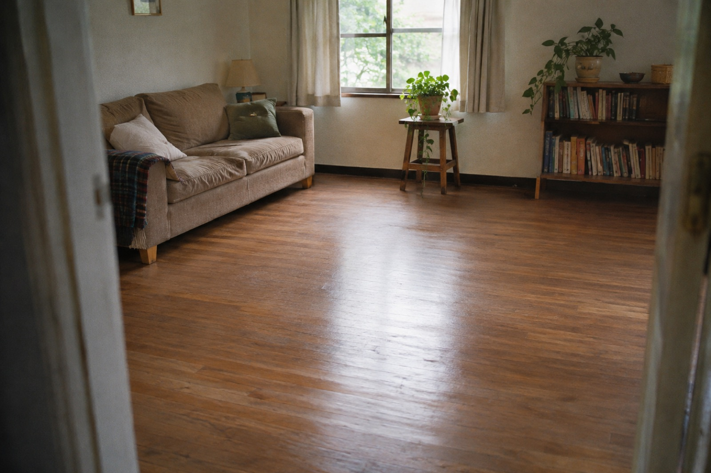
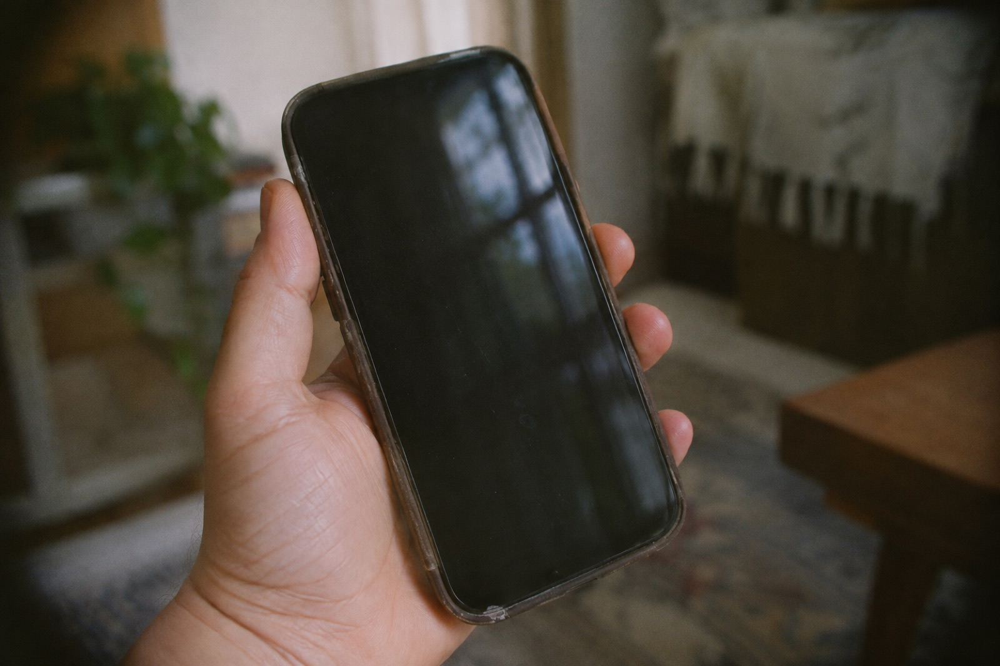

명상의 두 단계 - 나는 어디에 있는가?

핵심 요약
명상이 하는 일과 하지 않는 일
- 명상은 배경자아를 알아차린 뒤 일상으로 돌아와 경험과 의식을 통합하는 길이다.
- 생계를 위한 하기 싫은 일도, 하지 않았을 때 생길 끔찍한 일과 비교하면 지금 일을 고른 선택이다.
- 명상은 삶의 고통을 선명하게 알아차리는 것이며, 알아차림으로 덤덤히 넘겨 버리는 것은 명상이 아니다.
- 휴대폰도 옷도 집도 지위도 내 것일 뿐 나 자신이 아니며, 그것을 알아차리는 존재가 나이다.
상세 요약
이 강의에서 다루는 질문 8개펼치기접기
왜 아이는 ‘1등급을 받지 못하면 어떡하느냐’며 우는가
첫 질문은 1등급을 받지 못하면 어떻게 하느냐며 우는 고등학생 자녀의 사연에서 시작한다. 김주환 교수는 이 울음의 원인이 아이의 나약함 때문이 아니라 내신 상대평가라는 제도에 있다고 짚는다.
상대평가에서는 학생 100명이 모두 미친 듯이 성실하게 공부해도 1등급은 일정한 비율의 학생에게만 돌아간다. 아이는 모두가 1등급을 받는 것이 불가능하다는 것을 알면서도 2등급 아래로 내려가는 것은 상상하기 싫어한다. 강의는 이 구조를 일정 인원만 살아남는 「오징어 게임」에 비유한다.
알랭 드 보통의 책에 나오는 것처럼, 계급이 세습되는 사회에서는 하층에 속한 사람이 스트레스를 덜 받는다고 한다. 자기 처지가 자기 잘못이 아니기 때문이다. 반면 내신 제도는 아직 아무것도 정해지지 않았다고 말하면서 시험으로 경쟁시키고, 1등급을 마치 1등급 인생처럼 만든다. 강의는 이를 사람을 잡는 제도라고 부른다.
대학 서열은 먹고사는 문제와 직결된다. 외환위기와 금융위기를 지나며 학부모들은 좋은 대학을 나와도 회사가 망하면 실업자가 된다는 것을 깨달았고, 그래서 의대, 치대, 한의대, 약대처럼 자격증으로 생계가 보장되는 학과가 인기를 얻었다. 최상위권이 의대로 몰리는 것은 적성 때문이 아니라 점수와 생계 보장 때문이라는 진단이다. 지방 어디에 있든 모든 의대의 커트라인이 먼저 차고 그다음에 서울대 공대와 자연계열이 시작되어, 대학 서열은 사라지고 학과 서열만 남았다고 짚는다.
지금 이 강의를 듣는 30~40대 대부분도 이 경쟁을 뚫고 나온 사람들이어서 저마다 트라우마를 안고 있다고 한다. 문제는 입시제도 하나가 아니라 교육 시스템 전체이다. 태어나서 성인이 될 때까지 사람을 끊임없이 괴롭히는 구조여서, 근본부터 생각해야 변화의 조짐이 보인다는 것이 강의의 주장이다.
부모와 어른은 아이에게 무엇을 말해야 하는가
입시제도는 하루아침에 바뀌지 않으므로, 그 안에서 아이가 덜 다치고 완전히 망가지지 않게 키우는 방법을 생각해야 한다. 울며 묻는 아이 앞에서 어른이 할 말은 많지 않고, 우선 미안하다는 말이 먼저라는 것이 강의의 입장이다.
강의가 부모에게 권하는 대응은 세 가지이다.
- 편도체 안정화부모가 먼저 편도체가 안정된 상태를 유지한다.
- 시스템이 잘못되었다고 말하기1등급은 소수만 받게 되어 있고 나머지는 받지 못하게 된 구조이므로, 아이의 잘못이 아니라고 말해 준다.
- 연민 갖기아이가 1등급을 받더라도 받지 못한 친구에게 연민을 가지라고 덧붙인다.
가장 중요한 것은 말하는 부모가 진심으로 그렇게 생각하는 것이다. 1등급을 받지 못해도 진심으로 괜찮고, 어느 대학에 가지 못하더라도 굶어 죽지는 않는다고 믿어야 한다. 강의는 한국에서 굶어 죽는 사람은 많지 않고, 오히려 스트레스와 우울증에 시달릴 위험이 훨씬 크다고 짚는다. 굶어 죽을 걱정은 내려놓고 아이를 마음 편하게 두라는 당부로 이 질문을 마친다.
명상으로 현실의 문제를 해결할 수 있는가
두 번째 질문은 배경자아(알아차리고 있는 그 자리, 다음 절에서 설명한다)를 알아차리는 것만으로 모든 문제가 해결된다는 말이 이해되지 않는다는 내용이다. 생계를 위해 하기 싫은 일을 할 때의 고통은 알아차림으로 넘기기에는 너무 선명하다는 것이다. 질문자는 이것이 수련이나 깨달음이 부족해서인지, 책을 잘못 이해해서인지를 묻는다.
강의의 답은 질문이 오해에서 출발했다는 것이다. 명상은 현실의 문제를 해결하지 못한다. 현실의 문제는 현실에서 현실적인 방법으로 해결해야 한다. 명상으로 현실의 문제가 해결된다고 말하는 사람은 명상이 무엇인지 모르거나 사기꾼이라고 강의는 잘라 말한다.
질문자가 말한 생계를 위한 일도 어쩔 수 없는 일이 아니라 선택이다. 하기 싫은 일을 하지 않았을 때 생길 더 끔찍한 일과 비교한 뒤, 더 싫은 일을 막으려고 하기 싫은 일을 고르기 때문이다. 아픈 어머니를 돌보는 일도 같다. 그래서 어쩔 수 없이 한다는 느낌을 줄이고, 내 삶을 내가 선택한다는 자율성, 곧 내적 통제 소재를 회복하는 것이 좋다고 조언한다.
그렇다면 명상은 무엇을 하는가. 명상의 핵심은 휩쓸리지 않고 명료한 의식으로 지금 여기에서 알아차리는 것이다. 알아차린다고 문제가 해결되지는 않지만 그 문제가 주는 괴로움에 끌려가지 않을 수 있고, 괴로움의 정도는 줄어든다. 암에 걸린 사람이 매일 병을 알아차린다고 암이 사라지지는 않는 것과 같다.
강의는 진흙탕 비유로 이 차이를 보여 준다. 중요한 약속을 앞두고 정장을 입은 채 진흙탕에 빠졌다고 하자.
- 명상하지 않는 사람세상과 자신에게 안팎으로 화를 내느라 발을 빼는 것도 잊은 채 진흙탕에서 발만 구른다.
- 명상하는 사람빠졌음을 바로 알아차리고, 편도체를 활성화하지 않고 전전두피질을 활성화해 물휴지를 구해 닦아낸 뒤 갈 길을 간다.

문제는 해결되지 않았다. 이미 빠져 버린 사실도 더러워진 옷도 그대로이다. 그러나 최선의 대응을 하고 크게 기분 나빠하지 않으며 길을 계속 갈 수 있다. 명상으로 문제를 해결한다는 생각은 빠지기 직전으로 되돌려 주는 마술을 기대하는 것과 같다.
배경자아와 스크린 비유는 어떻게 이해해야 하는가
질문자는 배경자아가 건강하고 평화롭다고, 또 삶을 스크린에 비친 영화처럼 덤덤히 넘겨야 한다고 이해한 듯하다. 강의는 둘 다 오해라고 답한다.
첫째, 배경자아에는 건강하다거나 평화롭다는 수식어를 붙일 수 없다. 배경자아는 대상도 실체도 아니다. 알아차림이 일어나는 자리, 곧 알아차리는 주체이다. 고요한 것이 아니라 고요함 그 자체이고, 평화로운 것이 아니라 텅 비어 있음 그 자체이다. 경험의 주체이므로 경험의 대상으로 만날 수는 없다. 다만 누구나 지금도 소리를 알아차리고 있으므로, 배경자아를 느끼지 못하겠다는 사람은 없다고 한다.
둘째, 스크린 비유는 덤덤히 넘기라는 뜻이 아니다. 공포 영화를 볼 때 우리는 두려움을 느끼면서 동시에 그것이 스크린에 비친 이미지임을 안다. 영화가 스크린에 비치고 있다는 사실을 알아차리는 것 자체가 명상이다. 그래서 명상을 해도 두려움은 사라지지 않는다. 명상은 올라오는 분노나 두려움을 억누르는 방법이 아니라, 그것을 진짜로 여겨 휩쓸리지 않도록 알아차리는 방법이다.
셋째, 한 걸음 떨어져 남의 일처럼 객관화해서 보라는 뜻도 아니다. 경험자아와 기억자아(에고)와 배경자아는 언제나 동시에 존재하며 어느 하나를 없앨 수 없다. 배경자아의 알아차림과 경험자아의 스토리텔링도 동시에 일어난다.
참된 행복은 내면에 있는가, 명상은 모든 것을 한 번에 해결하는가
‘참된 행복은 내면에서 찾아야 한다’는 말에 강의는 전혀 공감하지 않는다고 답한다. 그렇다면 혼자 방에 앉아 있는 사람이나 철창에 갇힌 사람이 행복해야 한다는 반문이다. 자신의 책에 그런 말이 있다면 실수이고 아마 쓰지 않았을 것이라고 하면서도, 이렇게 적혀 있으니 확신할 수는 없다고 덧붙인다.
인간의 뇌가 행복해지는 가장 확실한 길은 다른 사람을 행복하게 해 주는 것이고, 진짜 행복은 인간관계에 있다. 각자의 내면에 있는 것은 배경자아, 곧 텅 빈 고요함 그 자체이다. 그것과 하나일 때 편도체 활성화가 가라앉아 고요하고 평온해지며 깊은 행복을 느낄 수 있다. 행복이라는 덩어리가 내 안 어딘가에 숨어 있는 것이 아니어서 뒤질수록 나오지 않는다.
이 차이를 ‘I am at peace’와 ‘I am peace’로 설명한다. 앞의 말은 나는 지금 평화로운 상태에 있다는 뜻이고, 뒤의 말은 나라는 배경자아의 본질 자체가 평화라는 뜻이다.
‘알아차리는 자신을 알아차리면 모든 것이 한 번에 해결된다’는 이해도 오해이다. 강의는 바둑에 비유한다. 바둑은 돌이 죽고 사는 전투여서 감정이 끓고, 급소를 찔리면 몸이 찔린 것처럼 아프다. 위기에 빠진 대국 도중에 돌을 놓고 눈을 감는다고 이세돌이 알파고를 이긴 ‘신의 한 수’ 같은 묘수가 떠오르지는 않는다.
그러면 명상은 왜 하는가. 감정이 끓을 때 명상을 하면 지금 바둑을 두고 있을 뿐이고 여가 시간을 즐기고 있다는 것을 알아차릴 수 있다. 편도체가 안정되고 전전두피질이 활성화되면 좋은 수가 떠오를 가능성은 조금 높아진다. 그러나 명상 자체가 바둑이라는 문제를 풀어 주지는 않는다. 모든 것이 한 번에 해결된다고 기대하는 한 명상을 할 수 없다는 것이 강의의 결론이다.
수련이 부족해서도 깨달음이 부족해서도 아니다. 명상은 수련이나 수행을 쌓아 가는 일이 아니다. 자신이 깨달았다고 주장하는 사람일수록 깨달음에서 멀다는 것이 김주환 교수가 여러 번 확인한 경험이다. 질문자의 이해가 부족한 것이 아니라 자신이 설명을 충분히 하지 못한 탓이라고 반성하며 이 대목을 맺는다.
명상의 두 단계는 무엇인가
오늘 강의의 답은 명상가 루퍼트 스파이라의 책 두 권에 있다. 『알아차림에 대한 알아차림』 역자 서문에 따르면 제목의 두 단계는 높고 낮은 단계가 아니라 방향이다.
- 첫 번째 방향일상적인 경험에서 벗어나 순수 의식, 곧 인식 주체로서의 진짜 나를 찾는다.
- 두 번째 방향그것을 찾은 뒤 다시 일상의 삶과 경험으로 돌아와 순수 의식과 일상의 경험을 통합한다.
두 방향을 합친 것이 스파이라가 말하는 직접적인 길이며, 특정한 종교 전통에 속하지 않는다. 『알아차림에 대한 알아차림』은 주로 첫 번째 단계를, 『사물의 투명성』은 의식과 경험이 한 덩어리임을 보이는 두 번째 단계를 다룬다.
스파이라는 깨달음이 특별한 경험이 아니라고 거듭 강조한다. 깨달아야겠다는 목표의식으로 노력할수록 오히려 깨달음에서 멀어지고, 알아차림을 알기 위해서는 아무런 노력도 필요하지 않다. 특별한 기법으로 깨닫게 해 주겠다거나 신비한 경험을 하게 해 주겠다는 명상 전문가는 명상이 무엇인지 잘 모르는 사람으로 보면 된다는 설명이다.
개별적인 자아를 없애는 것도 명상의 목표가 아니다. 제거해야 할 개별적인 자아는 애초에 존재하지 않는 환상이다. 그것을 해체하고 뿌리뽑으려는 시도는 오히려 환상을 굳힐 뿐이라고 스파이라는 설명한다. 명상의 목표는 깨달음을 얻는 것이 아니라 더 편안해지고 행복해지는 것이다. 명상은 우리가 하는 행위가 아니라 알아차림이라는 존재 방식이다.
나는 누구이고, 무엇이 내 것인가
스파이라의 책은 인도 베단타 철학의 핵심 질문인 ‘나는 누구인가’에 간결하게 대답한다. 일상에서 경험하는 나는 진짜 내가 아니라, 텅 비어 있는 진짜 나에 덧씌워진 것이다. 이름은 나에게 부여된 것이고, 직업은 일정 기간 맡은 역할이며, 입은 옷이 내가 누구인지 정하지도 않는다. 부모, 자식, 상사, 부하 같은 관계의 역할도 상대적으로 잠시 맡고 있을 뿐이다.
집, 차, 전화기, 컴퓨터도 잠시 내 것이었다가 스쳐 지나갈 뿐, 나를 이루는 본질이 아니다. 내가 가진 것, 맡은 역할, 나를 한정 짓는 모든 것을 제외하면 남자인지 여자인지, 몇 살인지도 사라진다. 남는 것은 텅 비어 있음뿐이고, 그것이 진짜 나이다.
이 텅 빔은 없음이 아니다. 나라는 자리에 아무것도 없다는 불교의 가르침, 곧 제법무아에서 말하는 나 없음은 인식 대상으로서의 나가 없다는 뜻이지, 인식 주체로서의 진짜 나가 없다는 뜻이 아니다. 인식 주체로서의 나는 분명히 있다. 영혼이라고 부르는 것도 ‘저기 영혼이 있구나’ 하고 알아차릴 수 있는 인식 대상이어서 진짜 나가 아니다. 진짜 나는 눈이 눈을 볼 수 없듯이 묘사할 수 없고, 공이지만 무는 아니다.
공간 비유도 같은 뜻이다. 방에 들어가면 사람과 물건이 공간을 차지하고 있지만, 그 공간이 없는 것은 아니다. 소리가 나기 전에도, 소리와 함께일 때도, 소리가 사라진 뒤에도 고요함이 있다. 우리는 이를 자꾸 잊고 물건과 소리에만 집중할 뿐이다. 공간과 고요함은 늘 거기 있는 텅 빈 배경이고, 그 자리가 배경자아이다.

휴대폰 비유가 이를 보여 준다. 손에 든 휴대폰은 분명 내 것이지만 나는 아니다. 휴대폰을 잃어버려도 내가 사라지지 않고, 바꾼다고 내가 바뀌지도 않는다. 휴대폰이 나인 것이 아니라 휴대폰을 바라보며 ‘이것은 내 휴대폰이다’라고 알아차리는 존재가 나이다. 옷, 집, 차, 지위, 명예, 업적도 마찬가지이다.

문제는 대부분의 사람이 내 것과 나 자신을 구분하지 못한다는 점이다. 직업이 곧 나라고 믿는 사람은 직장에서 잘리면 괴롭고, 휴대폰이 곧 나라고 믿는 사람은 휴대폰을 변기에 빠뜨리면 괴롭다. 이름이 곧 나인 사람은 명예가 손상되면, 인간관계가 곧 나인 사람은 관계가 깨지면 괴롭다. 대부분의 괴로움이 내 것을 나 자신으로 착각하는 데서 오며, 이 착각이 편도체를 필요 이상으로 활성화한다고 진단한다.
생각과 감정도 마찬가지이다. 내 생각도 내 감정도 내 것이고 나에게 일어나는 사건일 뿐 나 자체가 아니다. 자녀교육에 매달리는 부모가 오히려 아이의 공부를 방해하는 것도 자녀와 자기 삶을 구별하지 못하기 때문이다. 아이는 아이이고 나는 나이다.
이 구별이 서면 생각과 감정에 휩쓸리지 않고 한 걸음 떨어져 바라볼 수 있다. 홍수가 나서 모든 것이 휩쓸려 가도 나는 물이 닿지 않는 모래섬에서 홍수를 바라볼 수 있다. 이것이 자신을 섬으로 삼으라는 가르침, 곧 아따디빠의 뜻이다. 우파니샤드의 말로는 이것이 아트만을 발견하는 것이다. 선불교의 말로는 불성이나 본래면목을 발견하는 것이다. 이름만 다를 뿐 같은 이야기를 두 가지 방식으로 하는 셈이다.
그래서 무엇을 할 것인가
강의는 이렇게 정리한다. 첫 번째 단계는 『알아차림에 대한 알아차림』이 다루는 내용이다. 모든 문제의 근원이 내 안에 있음을 알고, 애쓰지 않는 노력으로 배경자아에 돌아가는 것이다. 애쓰지 않는 노력이란 열심히 해 보려는 것이 아니라 그저 명료하게 알아차리는 것이다. 두 번째 단계는 배경자아와 현실의 경험이 한 덩어리임을 보이는 『사물의 투명성』의 내용이며, 주체와 객체의 통합, 곧 의식과 경험의 통합이다. 시간이 많이 지나 두 번째 단계는 다음 기회로 미룬다.
나만 바뀌어서 무엇이 되느냐는 질문에는 짧게 대답한다. 돈 많은 사람과 잘생긴 사람을 높게 보는 세상이 괴롭더라도, 내가 바뀌어 그것 때문에 괴롭지 않다면 내 마음은 편해진다. 나만 바뀌어도 나라도 편하다는 것이다.
명상을 ‘적극적인 현실의 알아차림을 통해 최선의 대응책을 찾는 자기 훈련’으로 정의한 질문에는 그렇게 정의하고 싶지 않다고 답한다. ‘적극적’이라는 말은 애써 노력하는 느낌을 주지만 명상은 애쓰지 않는 노력이다. 알아차림 훈련에서 노력하고 굳게 결심하는 모범생 같은 자세는 버려야 한다. 그것은 모두 명상에 방해가 되는 ‘하는 모드’(doing)이고, ‘있는 모드’(be)가 아니기 때문이다.
이 강의의 내용을 일상에서 실천하면 세 가지로 정리된다.
- 고통을 선명하게 알아차리기괴로운 일이 있으면 덤덤히 넘기려 하지 않고, 어떤 일 때문에 어떤 고통을 겪는지 있는 그대로 알아차린다.
- 내 것과 나를 구별하기손에 든 물건이나 맡은 역할을 바라보며, 이것은 내 것이고 이것을 알아차리는 자리가 나라는 점을 떠올린다.
- 애쓰지 않기잘해내려는 모범생의 자세를 내려놓고 지금 있는 그대로를 알아차린다.
타임스탬프
■ 핵심 세션 14:16 본강의 시작: 명상으로 현실의 문제를 해결할 수 있는가 31:49 명상은 현실의 문제를 해결하지 못한다 42:50 바둑 비유: 명상으로 모든 것이 한 번에 해결되지는 않는다전체 타임스탬프 보기타임스탬프 접기
■ 핵심 세션
14:16 본강의 시작: 명상으로 현실의 문제를 해결할 수 있는가
31:49 명상은 현실의 문제를 해결하지 못한다
42:50 바둑 비유: 명상으로 모든 것이 한 번에 해결되지는 않는다
56:26 나는 누구인가: 내 것과 나 자신의 구별
1:15:18 두 단계 정리와 애쓰지 않는 노력
—상세—
■ 1. 내신 상대평가와 부모의 대응
0:01 그릿 질문 예고
1:10 내신 상대평가가 만든 두려움
4:00 오징어 게임 비유
5:30 평생 생계와 직결된 입시와 자격증 학과
7:36 경쟁을 뚫고 나온 어른들의 트라우마
10:46 어른이 아이에게 할 말이 없다는 고백
11:51 부모의 대응: 편도체 안정과 시스템이 잘못됐다는 말
12:50 1등급을 못 받아도 괜찮다는 진심
■ 2. 명상으로 현실의 문제를 해결할 수 있는가
14:16 본강의 시작
15:23 질문 낭독: 배경자아와 모든 것이 해결된다는 말
17:56 질문은 오해에서 나왔다는 답
18:51 배경자아는 대상이 아니라 알아차리는 자리
21:01 소리 뒤의 고요와 텅 빈 공간
22:55 스크린 비유는 덤덤히 넘기라는 뜻이 아니다
24:44 명상해도 두려움은 사라지지 않는다
25:16 하기 싫은 일도 내가 하는 선택이다
28:44 고통을 선명하게 알아차리는 것이 명상
30:50 괴로움의 정도가 줄어든다
31:49 명상으로 현실의 문제를 해결할 수 없다
33:03 진흙탕에 빠진 사람의 두 모습
36:39 거리를 두고 보라는 뜻이 아니다
37:30 경험자아·기억자아·배경자아는 동시에 일어난다
■ 3. 행복과 깨달음에 대한 오해
38:04 참된 행복은 내면에서 찾는다는 말에 대한 반박
39:30 행복은 다른 사람을 행복하게 할 때
41:16 I am at peace가 아니라 I am peace
42:34 모든 것이 한 번에 해결된다는 오해
42:50 바둑 비유
48:19 수련이나 깨달음이 부족해서가 아니다
■ 4. 명상의 두 단계
50:05 알아차림에 대한 알아차림 역자 서문
51:19 두 단계는 높낮이가 아니라 방향
52:29 직접적인 길
53:55 깨달음은 특별한 경험이 아니다
55:23 개별적인 자아를 없애는 것이 목표가 아니다
56:08 명상은 존재 방식
■ 5. 나는 누구인가: 내 것과 나 자신
56:26 이름과 직업과 역할은 나에게 부여된 것
58:05 모두 제외하고 남는 것
59:26 제법무아와 인식 주체로서의 나
1:01:38 방 안의 공간과 소리 뒤의 고요
1:02:45 휴대폰 비유
1:05:07 내 것을 나로 착각할 때의 괴로움
1:08:16 자신을 섬으로 삼기
1:09:22 자녀와 나를 구별하지 못하는 부모
1:11:20 공이지만 무가 아니다
1:13:17 제법무아는 인식 주체를 부정하지 않는다
1:13:38 아트만과 불성은 같은 이야기
■ 6. 정리와 질의응답
1:15:18 첫 단계와 두 번째 단계 정리
1:16:48 사물의 투명성은 다음 기회로
1:17:41 나만 바뀌면 되는가라는 질문
1:19:01 적극적인 알아차림이라는 정의에 대한 답
1:20:09 모범생 자세를 버리고 있는 그대로 알아차리기
1:21:19 마무리와 휴강 안내출처와 편집자 주
원본과 참고 자료
편집자 주
강의 내용에 대하여
- 자동 생성 자막을 바탕으로 정리했고 인식 오류는 문맥으로 바로잡았다. ‘배경자’는 ‘배경자아’로, ‘개별적인 자’는 ‘개별적인 자아’로, ‘배단’은 ‘베단타’로, ‘아다디바’는 ‘아따디빠’로, ‘아뜨 만’은 ‘아트만’으로, ‘스파이어’는 ‘루퍼트 스파이라’로 고쳤다. 시각은 몇 초 어긋날 수 있다.
- 방송 날짜(2025-03-09)와 영상 길이(1시간 23분 16초)는 유튜브 메타데이터로 확인했고, 설명란 전문과 대조했다.
- 상대평가와 입시제도가 사람을 잡는 제도라는 진단, 최상위권이 의대로 몰리는 이유, 굶어 죽을 위험보다 스트레스와 우울증의 위험이 훨씬 크다는 말은 김주환 교수 개인의 견해이며 근거 자료를 확인하지 못했다.
- 계급이 세습되는 사회에서는 하층이 스트레스를 덜 받는다는 알랭 드 보통의 책 내용은 강의의 설명만 있고 원문을 확인하지 못했다.
- ‘I am at peace’와 ‘I am peace’가 루퍼트 스파이라의 말인지는 강연자도 확실하지 않다고 밝혔고 확인하지 못했다.
- 제법무아를 인식 대상으로서의 나가 없다는 뜻으로 풀이한 것과, 아트만과 불성이 같은 이야기라는 설명은 강연의 풀이이며 학술적 합의가 아니다. 자막의 ‘안았다’ 같은 표기는 무아(anattā)의 인식 오류로 보고 풀었으나 확실하지 않다.
- ‘자신을 섬으로 삼으라’는 아따디빠가 초기불교 『대반열반경』의 구절이라는 점은 원문을 열어 확인하지 못했다.
- 개별적인 자아를 해체하려는 시도가 환상을 굳힌다는 대목은 자막이 불분명했으나, 분리된 자아(separate self)를 없애려는 시도가 그 환상을 이어 가게 할 뿐이라는 스파이라의 영어 문장과 같은 뜻임을 확인했다.
- 영상 화면(책 쪽수와 판서)은 대조하지 못했다.
강의 밖 보충 자료
- 한국어판 『알아차림에 대한 알아차림』은 퍼블리온에서 김주환 번역으로 나왔다고 리디 소개 페이지가 밝힌다. 영문 Being Aware of Being Aware는 Hachette UK 도서 정보에서 ‘Essence of Meditation’ 시리즈의 첫 권으로 소개된다. 두 책이 같은 책이라는 점은 제목으로 짐작했을 뿐 따로 확인하지 못했다.
- Sloww의 Being Aware of Being Aware 요약은 스파이라의 문장으로 ‘제거해야 할 분리된 자아(separate self)는 없고, 그것을 해체하려는 시도는 그 환상을 이어 가게 할 뿐’이라는 취지를 소개한다. 강의의 ‘개별적인 자아’는 이 ‘separate self’에 해당한다. 교보문고 『아이엠』 소개글은 스파이라가 아트마난다 크리슈나 메논의 ‘직접적인 길(Direct Path)’ 가르침을 이어받았다고 설명하고, 『알아차림에 대한 알아차림』과 『사물의 투명성』을 그의 대표작으로 든다. 강의에서 말한 ‘직접적인 길’은 이 설명과 같은 갈래로 보인다.
정리 방식
- 도입의 해볼 일에서 인용은 자막 원문이고(군더더기·오인식만 고쳤다), ‘언제·할 일’은 강연자의 발언을 옮긴 것이다. 효과는 강연자의 설명이며 실험으로 확인된 것이 아니다.
- 고통이 오래 이어지거나 일상이 힘들면 전문가와 상의하라는 안내는 편집자가 덧붙였다.